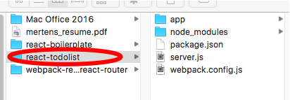

前言
直接开始吧！
环境配置
环境配置这块比较麻烦，而且容易出错，打击信心，建议直接使用我的这个脚手架。如果不理解的话看下我之前写的这篇文章，Webpack 配置。
|
|
Hello World!
环境配置好之后，就可以愉快地来写代码了。我们先来写一个简单的 Hello World 来验证一下之前配置的环境有没有问题。
我们先来看看项目的目录结构。

首先，我们打开脚手架的 app 这个文件夹里创建一个 containers 文件夹，这里存放我们的容器组件 App.js。我们先显示一个 hello world 来验证一下我们的配置文件是否可以正常运作。
app/containers/App.js
编辑好容器组件后，我们需要在入门文件那里将容器组件引入。
app/index.js
保存之后，我们执行
|
|
就可以在终端看到我们的配置文件已经 work 了，现在我们打开 localhost:3000 就可以看到一行 Hello World 了。
###